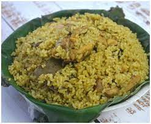

Donne Chicken Biryani

Description
This is a biryani(cooked rice and chicken) specific to the state of Karnataka.
It is a typical biryani that is local to the the southern part of Karnataka and is widely available in places such as Bangalore.
It is famous for its unique taste which is complimented by the spices used.
Ingredients
Masala Paste Ingredients
- 2 tsp oil
- 1 inch cinnamon
- 4 cloves
- ½ tsp pepper
- ½ onion (sliced)
- 10 cloves garlic
- 2 inch ginger
- 5 chilli
- 1 cup mint
- 1 cup coriander
- ½ cup fenugreek
- ½ tsp salt
- ½ cup water
Biryani Ingredients
- 2 tbsp oil
- 2 tbsp ghee
- 1 inch cinnamon
- 3 pod cardamom
- 3 cloves
- ½ tsp pepper
- 1 tsp cumin
- 1 onion (sliced)
- 1 potato (cubed)
- 1 carrot (chopped)
- 5 beans (chopped)
- ¼ tsp turmeric
- ½ tsp chilli powder
- 1 tsp biryani masala
- ½ tsp salt
- ¾ cup curd
- 2 cup water
- 1 cup seeraga samba rice (soaked 20 minutes)
- ½ lemon
Preparation Steps
- Firstly, in a pan heat 2 tsp oil, add 1 inch cinnamon, 4 cloves and ½ tsp pepper. Saute on low flame until the spices turn aromatic
- Add ½ onion, 10 cloves garlic, 2 inch ginger and 5 chilli
- Saute until the onions change colour slightly.
- Then add 1 cup mint, 1 cup coriander, ½ cup fenugreek and ½ tsp salt
- Saute until the leaves shrink and turn aromatic
- Cool completely, and transfer to the mixer jar
- Grind to smooth paste adding ½ cup water. Keep this aside
- Then in a large kadai (cooking bowl) heat 2 tbsp oil and 2 tbsp ghee.
Then add 1 inch cinnamon, 3 pods cardamom, 3 cloves, ½ tsp pepper and 1 tsp cumin
- Saute on low flame until the spices turn aromatic
- Then add 1 onion and saute until the onions turn golden brown
- Add the prepared masala paste and cook for 2 minutes or until the raw flavour is gone
- Now add 1 potato, 1 carrot, 5 beans, ¼ tsp turmeric, ½ tsp chilli powder, 1 tsp biryani masala and ½ tsp salt
- Saute until the spices are well combined
- Keep the flame on low and add ¾ cup curd and mix well
- Add 2 cup water 1 cup seeraga samba rice (soaked 20 minutes), ½ lemon and mix well
- Cover and simmer for 20 minutes or until the rice is cooked completely
- Leave it for 30 minutes, before opening the lid
You are ready to enjoy your delicious donne biryani with raita now!